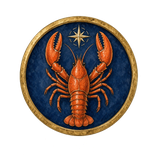

Lobsy
Sterrenkust
8B · K7R-2QM
Pauze
Hier ben je
Duinpad
Schelpenrij
Maangrot
Schatkaart
Pauze-eiland
Vuurtoren
Lampen
Sterrenbaai
Dit ben jij
Het Duinpad
· deel 1 van 4 · vraag 1 van 15
Het Duinpad
·
Vraag 1 van 60
Als een vriend verdrietig is, merk ik dat snel.
Lobsy leest de vraag voor
Nee
Niet echt
Soms
Best wel
Ja!
Vorige
Lobsy
Ik lees elke vraag voor. Tik op de luidspreker om het nog eens te horen.
Lees voor